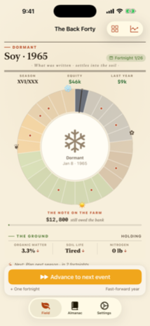
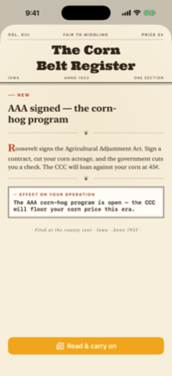
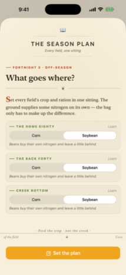
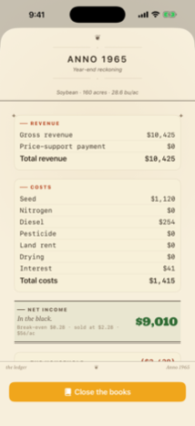
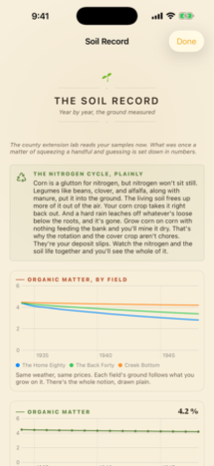
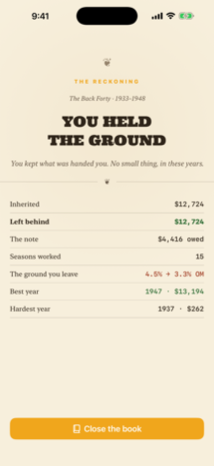

· An Almanack Perpetual · Being a faithful record of one farmer's years upon the Corn Belt ·
A telegram arrives: your grandfather's quarter-section passes to you — the team, the barn, the herd, and the mortgage with it. Pick your year, 1930 to the present. Pick your state. Farm it for thirty seasons.






Corn 3000 was built the way an extension bulletin is written: nothing ships without a source. Yield response to nitrogen follows Cerrato & Blackmer's linear-response-plateau. Land values follow the USDA-NASS series through the 1920 peak, the Depression trough, and the 1980s crash. The insurance agent quotes real subsidy schedules; the haymaking bill comes off the Iowa custom-rate survey. If we couldn't cite it, we didn't ship it.
Which means the game teaches the real thing: why rotations pay, why the 1979 land buyer met the auctioneer in 1985, and why the paying rate on nitrogen is enough, not the most.
Questions, trouble, or corrections to the record: write jeff@river.io and a human will answer. The privacy policy is the shortest page on this site.
· A STALK PALE IN JUNE · A BIN LIGHT IN OCTOBER ·
{kind=link}
{kind=link}
{kind=link}
{kind=link}
{kind=link}
{kind=link}